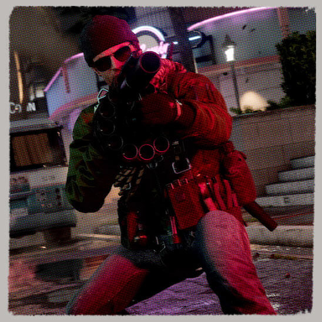

DES OPÉRATIONS CONTESTABLES
Plongez dans un univers réaliste et glaçant, avec ses missions officieuses et ses cibles classifiées. Les opérations contestables sont au cœur de l'expérience Multijoueur et recréent l'atmosphère unique et authentique de Black Ops avec de nouveaux modes et façons de jouer.

DES COMBATS SIGNATURE
Black Ops Cold War reprend cette atmosphère classique du Multijoueur de Black Ops et la sublime. Le gameplay prenant, la guérison automatique, les mouvements des opérateurs et les nouveaux systèmes innovants prennent vie de manière saisissante dans cette expérience de combat signée Black Ops.
EXPÉRIENCE CONNECTÉE
Black Ops Cold War est conçu pour supporter le cross-plateforme et le cross-gen ainsi que la progression partagée, ce qui permettra à la franchise Call of Duty de faire ses premiers pas dans la nouvelle génération de combat à échelle mondiale.